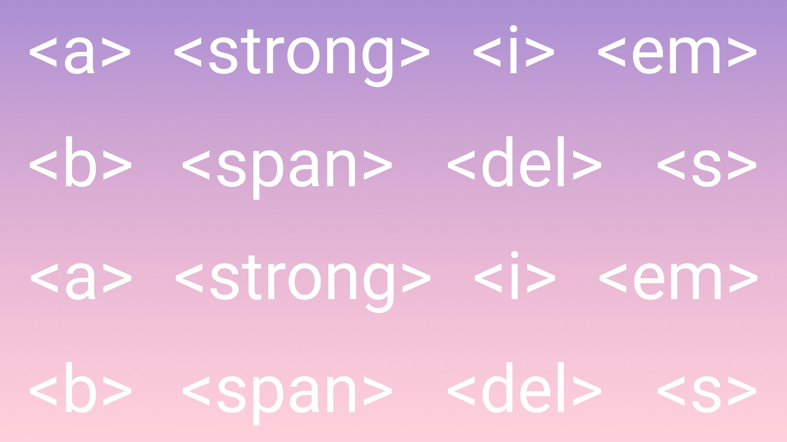

Під час введення тексту в документ часто виникає питання: як змусити браузер відобразити зарезервовані
символи мови HTML (наприклад,> або &) або символи, які неможливо ввести з клавіатури. Для введення в документ таких символів
в HTML передбачений механізм посилань на символи. Таким чином, коли необхідно ввести в документ, наприклад, символ &, то в
текст на його місце підставляється спеціальна послідовність - посилання на даний символ.
Посилання на символи можуть бути представлені будь-яким із зазначених нижче способів:
• & # D; - дозволяє задати символ, код якого має значення D (в десятковій системі числення);
• & # xH; - дозволяє задати символ, код якого має значення H (в шістнадцятковій системі числення);
• & ім'я_символа; - дозволяє використовувати іменоване посилання на символ.